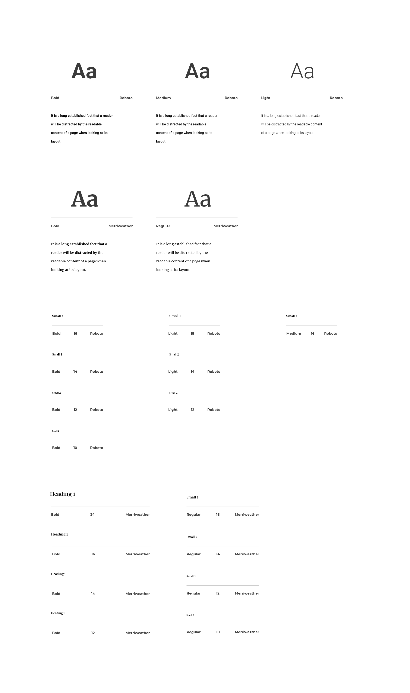

Overview
Problem Statement
Niramaya is a public welfare private initiative by a Bangalore based startup 'Mobishala', in collaboration with the government. The project seeks to establishes a communication between the citizens and the local authorities, to monitor and control Covid19 spread, initially in the state of Bhopal.
Proposed Solution
The entire system is managed by 2 applications, Citizen's App, and Supervisor's App. One used by and for the citizens. The other used by local authorities to collect citizen samples, test and evaluate them, and take necessary lockdown measures based on the severity of the situation.
Roles and Responsibilties
I was assigned the design of the Supervisor's App. Being the only designer in my team, My task was to conceptualize the user flow and deliver high fidelity mockups for development. This was accomplished by collaborating periodically with the team, on hangout meets and phone calls, to discuss and confirm designs on a mutually accepted notion.
Conceptualization
Information Architecture
This was rather a broad perspective of the supervisor app from start to finish. However, such a conceptualization allowed us to discuss possible user flows, sharing a common blueprint, and work around the same constraints.
Content
The content was collected from hospitals, participating in the program. The data so collected was used to figure out the major sections of the app. Based on a data analysis the necessary methods were defined in the system's framework,

Sketching
With the content isolated and sorted in a logical hierarchy, we brainstormed and identified possible user flows. The most optimal solution was then picked and worked on, as told below.
User Flow
This was a crucial stage in the project's life cycle as it played the basis for the entire design process that followed. With regular team meetups, user test case discussions, and mutual respect we were able to identify the most optimal navigation and hierarchy for the app.
Low Fidelity Designs
Wireframing
With user flows created, it wasn't long till I realized my wireframes to work on. Time was of essence during this pandemic. So it wasn't always possible to hold meetups, and so some decisions were left to my best knowledge. This didn't mean zero external influence on the design, however, most of the decisions were to be made by me alone. This project was a real test on my skills and design aesthetics, putting some serious responsibility on my shoulders.
Moodboarding
Reference and Inspiration
Since the supervisor's app was one of the 2 apps released in the program, the designs had to be in sync. By the time I signed in for the project as a designer, the team had already come up with a design for the citizen's app, which then worked as a reference for my designs on the Supervisor's app.
Visual Design
Typography
As mentioned above, most visual elements were an easy take from the Citizen's app to maintain a common theme. This greatly fastened the design process and allowed a greater focus on the UX as the primary goal was to at least produce an MVP for the user in the small-time span that we had.



Color
The primary color was a subtle dark shade of green, as the common notions associated with it are renewal, nature, and energy, the very feel we wanted to maintain in our interfaces. At other times, colors simply proved a way to distinguish elements on a single page or even establish a hierarchy where possible.

Components
Components were mainly cards. The icons and vector illustrations were used from flaticon.com and freepik.com.
High Fidelity UID
Mockup
This was solely handled by me, and hence the quality of screen renders dependent on my design aesthetics. There were many phases in the design process where a certain stage production rested solely on my decisions alone. This was quite a challenge as the quality of end product depends greatly on choices made in these solitary stages of the design process.
User Feedback
Before Feedback
User feedback was an inevitable part of almost all stages of the design process. Here's an example of how user flow was altered based on user feedback. The initial designs aimed at a very generic approach towards function access, as a list of available functions followed by separate individual function-specific pages based on users choice.
After Feedback
Based on user statements, we realized not all stages of the system needed access to all functionalities at a time. So we defined a serial user flow with each page with only those functionalities which will indeed be used by the user at that time.